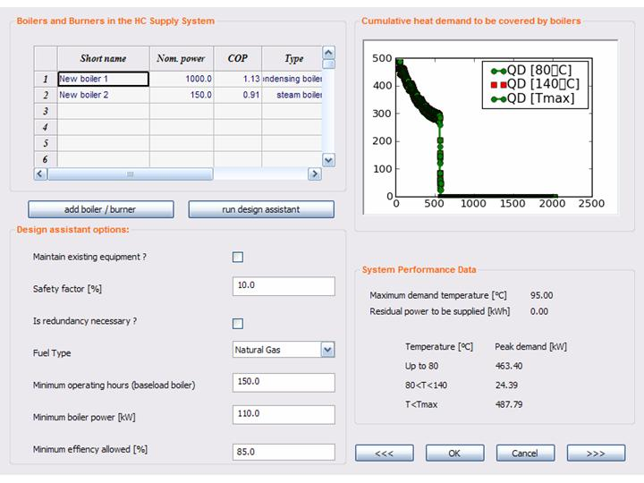

User Manual
Chapter 7: Heat & Cold Supply
7.9. Boiler & Burner Module
The
‘Boilers & burners’ module is part of the heat and cold supply
sheet within
the design of new proposals.
The ‘Boilers
& burners’ window
(fig.
7.9.1) can be subdivided in four funtions areas.

Figure 7.9.1
The boiler & burner (BB) design assistant window
In the
first quadrant
(top-left) all the boilers of the current alternative are displayed by
‘cascade
index’. When opening the window this index corresponds to the order in
which the
equipments have been filled in the questionnaire; it can be changed
manually in
the ‘H&C Supply’ window or automatically by running the design
assistant.
Besides the name of the equipment some additional information such as
nominal
power, efficiency and year of manufacturing are given.
In the
second quadrant
(top-right) there is a graphic showing the heat demand to be supplied
by
boilers. Three curves are displayed each one representing a different
temperature level. The lower one is the heat demand at a temperature
till to
80°C, the second one is the demand at temperature lower than
140°C while the
higher curve is the total heat demand. These are all cumulative
curves
and it means that the demand at a higher temperature is necessary
bigger than a
lower temperature one. Moreover each curve is ordered by decreasing
power and
therefore it represents the demand to be supplied for that number
of hours,
and not the demand at a given hour.
In the third
quadrant (bottom-left)
the user can modify some parameters for the configuration of the
‘design
assistant’ function. In particular the parameters are:
- Maintain
existing equipment? (default
value: yes): if no the design assistant deletes
all the boiler from the equipment list and design a new set of boiler
to supply the demand.
- Safety
factor[%] (default value: 10):
the peak demand should be raised by a safety factor to consider the
uncertainty of measurements and the possible increase of the demand
through time
- Is
redundancy necessary? (default
value: no): allows to specify whether the enterprise can accept
a reduced heat supply capacity when a boiler is off (for ordinary or
extraordinary maintenance) or not.
- Fuel
type (default value: natural
gas): some industries are not reached by the natural gas
distribution net
- Minimum
operating hours (baseload boilers) (default value: 2000)
- Minimum
boiler power [kW] (default
value: 100)
- Minimum
efficiency allowed [%] (default
value: 80): the design assistant automatically deletes
the low efficiency boilers from the equipments list.
Some of these
parameters can be modified only in the interactive mode.
In the fourth
quadrant
(bottom-right) some additional information such as the residual
peak
demand to be supplied (i.e. the demand the actual alternative is cannot
supply)
are collected in order to help the user in his/her design process.
How
to design the boiler system?
This tool
gives the possibility to add/delete boilers to/from the equipment list
manually
or to run a design assistant.
- The user
can delete a boiler by right clicking on it. A pop-up
requests to confirm the choice and then cancellation will be
effective. Einstein automatically updates the boiler list and the
residual peak demand to be supplied.
Figure 7.9.2: The add
boiler/burner pop-up
- Clicking
on the ‘add boiler/burner’ button a pop-up (fig.7.9.2) will request
the user to specify “where” to find the new boiler. The user has three
possibilities: 1) to select the equipment from the boiler database;
2) to enter the boiler data manually; 3) to retrieve it from a list of
previously deleted boilers.
- If the
user clicks the ‘run design assistant’ button Einstein will work
for him/her! Indeed the design assistant is able to analyse the heat
demand
and to find a suitable set of boiler to supply it efficiently. Moreover
the assistant deletes inefficient boilers and modify-if necessary- the
cascade index ordering them by increasing temperatures and
decreasing efficiency levels. Before running it, the user can change
some of the
design assistant parameters (see above).
The user
can accept the boiler set configuration by clicking the ‘ok’
button.